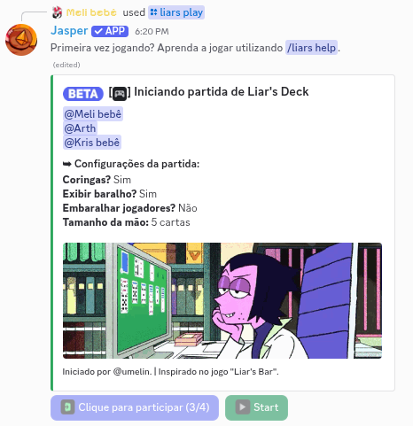
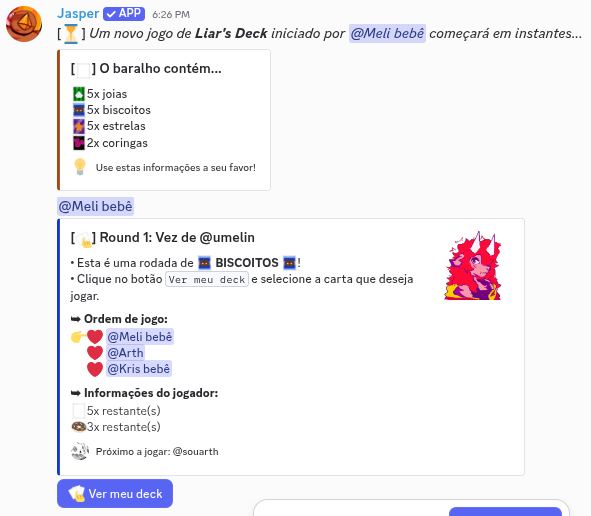
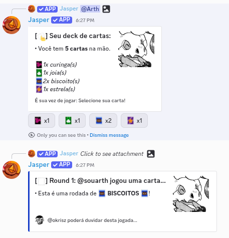
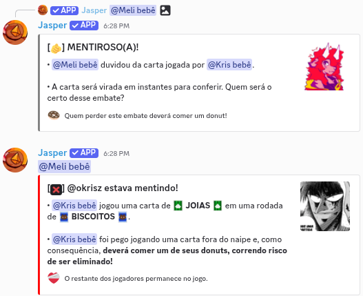
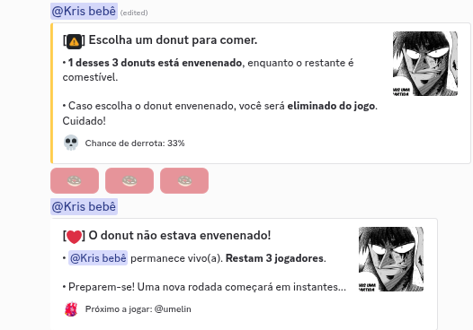
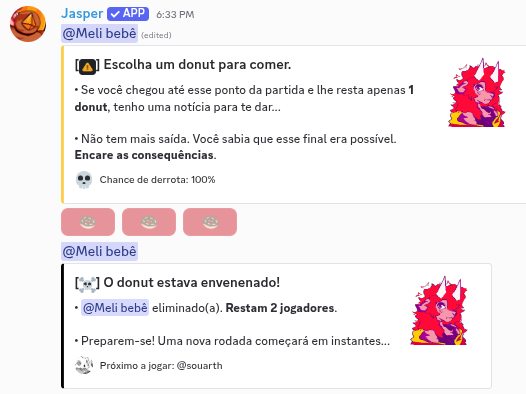
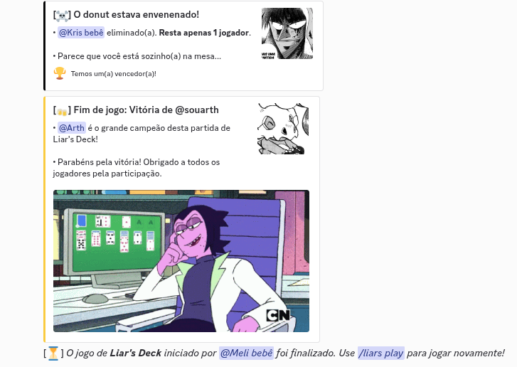

➥ Liar's Deck é meu mini-game de cartas e mentira, inspirado no modo de mesmo nome do
Liar's Bar, que estourou no lançamento
em 2024. Dá pra jogar com até 4 pessoas por partida, direto no canal de texto do seu servidor.
➥ Segue um pequeno tutorial de como funciona uma partida:
➥ Segue um pequeno tutorial de como funciona uma partida:
1. Use /liars play pra criar uma partida e esperar a galera entrar. O
limite é de 4 jogadores, igual no jogo original. Quem cria pode ajustar quatro coisas:
▸ Tamanho da mão: quantas cartas cada um recebe. O padrão é 5.
▸ Curingas: dá pra jogar sem eles, se você quiser uma partida mais dura.
▸ Ordem de jogo: por padrão é a ordem de quem entrou na partida, mas dá pra embaralhar.
▸ Revelar o baralho: mostra a todos quantas cartas de cada naipe existem na partida.

2. Ao iniciar, eu distribuo o baralho. Ele tem quatro naipes:
 joias,
joias,  ,
,
 estrelas e
estrelas e  coringas. Cada jogador recebe 5 cartas por padrão, mas quem
cria a partida
pode mudar isso.
coringas. Cada jogador recebe 5 cartas por padrão, mas quem
cria a partida
pode mudar isso.
Os três primeiros são naipes normais. O coringa é curinga de verdade: vale no lugar de qualquer um dos outros.

3. A cada round a mesa pede um naipe específico. Na sua vez, você joga uma carta daquele naipe... ou não. Minta! Ninguém vê o que você jogou de verdade, a não ser que alguém duvide.

4. Você pode duvidar de quem jogou antes de você, e quem vem depois pode duvidar de você. Quando há um questionamento, a carta é virada:
▸ Se você mentiu, você come um
 donut.
donut.
▸ Se você estava falando a verdade, quem duvidou come um donut.

5. Todo mundo começa com 3 donuts e é obrigado a comer um ao perder um confronto. O problema é que um deles está envenenado, e você não sabe qual. Eu mostro a sua chance de derrota antes de você escolher.

6. Comeu o donut envenenado, você morre e está fora da partida. Comeu um bom, segue o jogo. Quando sobra só um donut na sua frente, a chance de derrota é de 100% e não tem escapatória.

A partida acaba quando resta um sobrevivente.

7. Fique de olho no tempo: se alguém deixar uma interação da partida parada por mais de 5 minutos, a partida é encerrada automaticamente.
➥ Você pode usar o comando /liars help no Discord para revisitar essa mensagem!
➥ Espero que você aproveite! Qualquer dúvida, sinta-se livre para perguntar no meu canal de suporte.
Publicado . Dependendo da data de publicação, o texto pode estar levemente desatualizado.